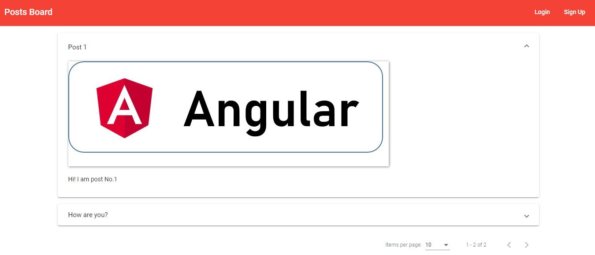

You can find the code on https://github.com/z2486357/Post-Board-MEAN-stack
This project was coded in MEAN stack, which is the combination of MongoDB, Express, Angular and Node.js.
First, when you enter the website, you will see the existing posts.
You can click it to see the detail of the post but you can not do anything to it because you are not authorized.
You can also change the number of the post displayed in a page.
If you didn't have an account, you have to sign up to get one for more function.
Then you can login to your account.
If you are the creator of the post, you can edit or delete it.
Press the edit button and you can enter to the detail of the post and edit it.

And the delete button for deleting the post.
Or you can press the "New Post" button on the top right corner to generate new post.
If you login as a different user.
You can't edit or delete the post which was not created by you.
There are also some others function like validation of the post and user sign up. Please go to the website below and try it yourself!
If you are interested, please visit https://github.com/z2486357/Post-Board-MEAN-stack for the code.
Also, you can visit this web application on http://mean-project-angular-node.s3-website.us-east-2.amazonaws.com/ to try it yourself